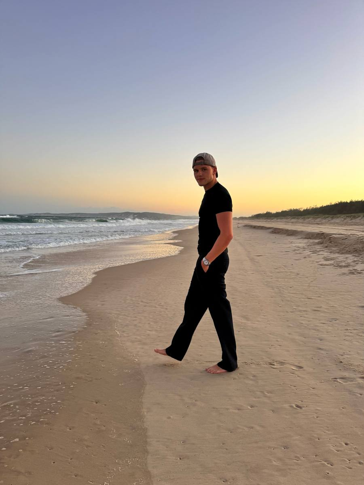
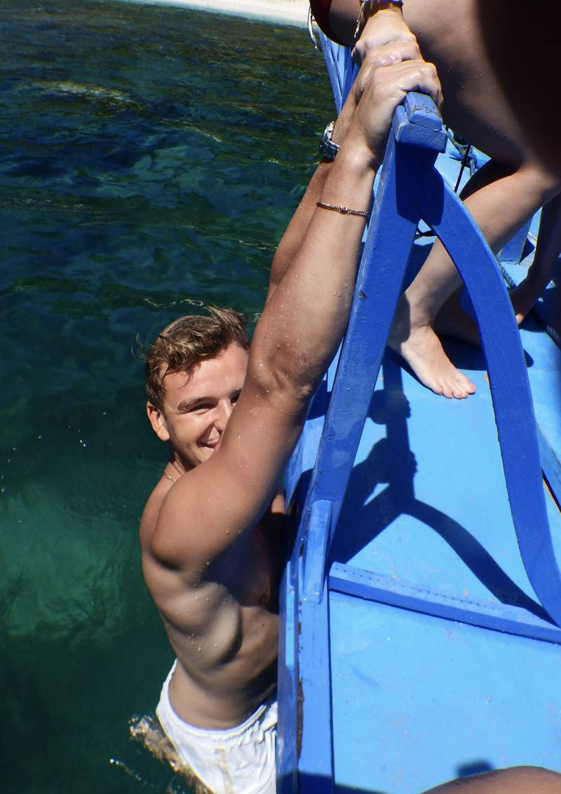

I'm a service technician from Hamburg, and I'm saving up for a well.
Rainborn Africa is my private project: €15,000 for one well in East Africa that gives around 300 people clean water. There is no organisation behind it, only me. This page shows where the project stands, including what is still open.
The plan on one page
- What
- One well with a pump, built by an experienced organisation on the ground.
- For whom
- A village community of around 300 people who currently have no clean water nearby.
- Where
- East Africa. I'm looking at partners and communities in Tanzania and Mozambique. The exact place is decided together with the partner.
- Cost
- €15,000 is my fundraising goal for the complete well.
- Raised so far
- €100 in the well fund.
- Who is behind it
- Justin Tempel, Hamburg. A private person with a full-time job, not a registered charity. Full address in the legal notice.
Why a technician builds a well
I work full-time as an international service technician. I've been on jobs across Europe, the Middle East and Africa, and I've seen what a piece of working infrastructure changes for the people around it.
Away from work I surf and freedive. Water is where I spend my free time, and for me it has always been there. For a lot of people it isn't. A well in a village means children don't walk for hours to fetch water, and fewer people get sick from what they drink.
I've had a lot of luck in life, with people who believed in me. Rainborn is how I want to give some of that back: one well, properly built, and documented from the first euro to the first water.
1 in 4 people worldwide still has no access to safe drinking water. WHO / UNICEF, 2025


What happens with your money
Four steps, in this order.
You donate
Through PayPal, any amount. The money goes into the well fund.
I report the total
The current amount is shown on this page. Hosting and all other running costs I pay out of my own pocket.
A partner builds
When the €15,000 is there, an organisation with experience on the ground builds the well and takes care of maintenance with the village.
You see the result
Photos and a final report: what was built, where, and what it cost.
Where the project stands
I'd rather tell you what is missing than have you find out later.
Done
- Project startedMarch 2025. Website, goal and legal notice are online.
- First money in the fund€100 is in the fund.
- Running costs coveredDomain and hosting are paid by me, not from donations.
Still open
- Partner organisationNot chosen yet. I'm comparing organisations that build and maintain wells in Tanzania and Mozambique.
- Exact locationFollows from the partner. It will be published here.
- Donation receiptsNot possible at the moment. Rainborn is not a registered charity, so donations are not tax-deductible. I'm working on solving this through the partner.
- The remaining money€14,900 is still missing.
For companies
A single well is a project a team can follow from start to finish. If your company wants to support it, write to me and we talk about what fits.
Please note: I can't issue a donation receipt at the moment. If you need one for your books, tell me and I'll let you know as soon as that changes.
Write to info@rainborn.africa- Updates with photos while the project runs
- Your company named on this page and on social media, if you want that
- A final report you can pass on to your team
- One contact person and no lengthy contracts
Help drill deeper
Every amount goes into the well fund. Payment runs through PayPal, so you don't give me any bank details.
€100 of €15,000
Opens PayPal in a new tab. Donations are not tax-deductible at the moment.
Questions people ask
Is my donation tax-deductible?
No, not at the moment. Rainborn is a private initiative and not a registered charity, so I can't issue donation receipts. I'm working on a partnership with an established organisation that would make this possible, and I'll announce it here.
Where exactly does the money go?
Into the well project. Hosting and other running costs I pay myself. Income and spending are documented publicly.
Which country will the well be in?
That is not decided yet. I'm looking at Tanzania and Mozambique. The place is chosen together with a partner who knows the region, so that the well is built where it is needed and looked after for years.
How do I know this is real?
My full name and address are in the legal notice at the bottom of this page, as German law requires. You can write to me at info@rainborn.africa at any time and you'll get an answer from me personally.
Can I get my money back?
Donations are voluntary and normally not refundable. If you donated by mistake, write to info@rainborn.africa as soon as you can and I'll do my best to sort it out.
Write to me
Questions, ideas, or you know an organisation I should talk to: I read every message myself.